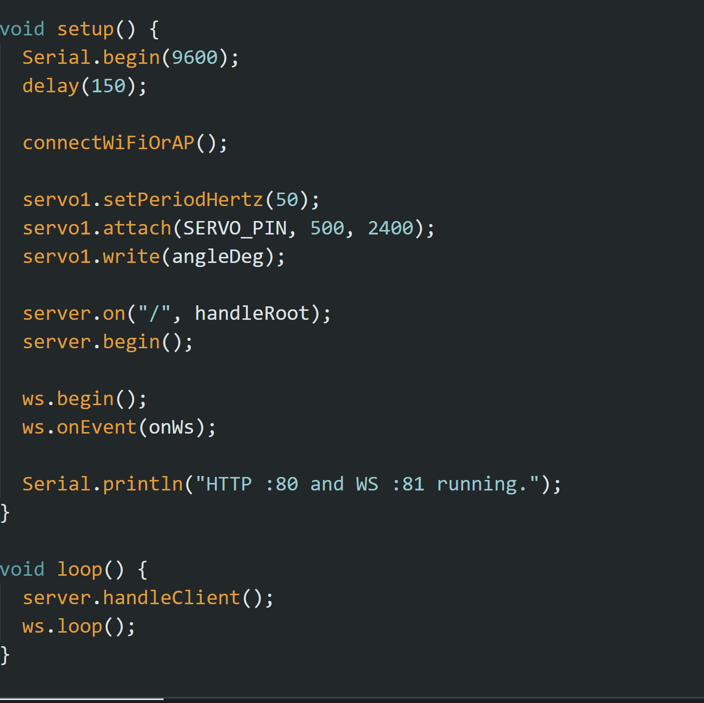

<div class="textcontainer">
<p class="margin"> </p>
<h3>Week 9: Radio, WiFi, Bluetooth (IoT)</h3>
<h4>Assignment: [Program something with IOT]</h4>
<br></br>
First Video: Testing on MAKERSPACE WiFi
<br></br>
Second Video: Testing on "DIY" Hotspot ("ESP32-Servo" network)
<br></br>
<video width="400" height="600" controls>
<source src="./MAKERSPACE.mp4" type="video/mp4">
</video>
<video width="400" height="600" controls>
<source src="./DIY.mp4" type="video/mp4">
</video>
<br></br>
For my IoT project, I used an ESP32 microcontroller to create a simple wireless servo control system. By connecting the ESP32 to
Wi-Fi (or starting its own access point if Wi-Fi is unavailable), it hosts a small webpage accessible from any device on the same
network. That webpage includes a slider that allows the user to adjust the servo's angle in real time. A WebSocket connection
between the ESP32 and the browser ensures instant, two-way communication, meaning movements are smooth and responsive without
needing to refresh the page. This setup demonstrates how the ESP32 can combine networking, real-time control, and simple web
interfaces for physical devices.
<br></br>
The code begins by importing libraries for Wi-Fi, HTTP, WebSocket, and servo control, then defines the Wi-Fi credentials, servo
pin, and web content. In setup(), it initializes serial communication, attempts to connect to Wi-Fi, and starts an access point if
the connection fails. The servo is attached and centered at a default angle (90 degrees). The web server then serves a small HTML
page with a slider, while the WebSocket server listens for incoming messages. As the user moves the slider, the browser sends angle
values through the WebSocket, which the ESP32 reads and applies directly to the servo. Finally, the main loop continuously handles
client requests and WebSocket updates to maintain live communication. See below code snippet showing the setup and loop workflow.
<br></br>

<a download href='./wifi.ino'>Download my code!</a>
</div>